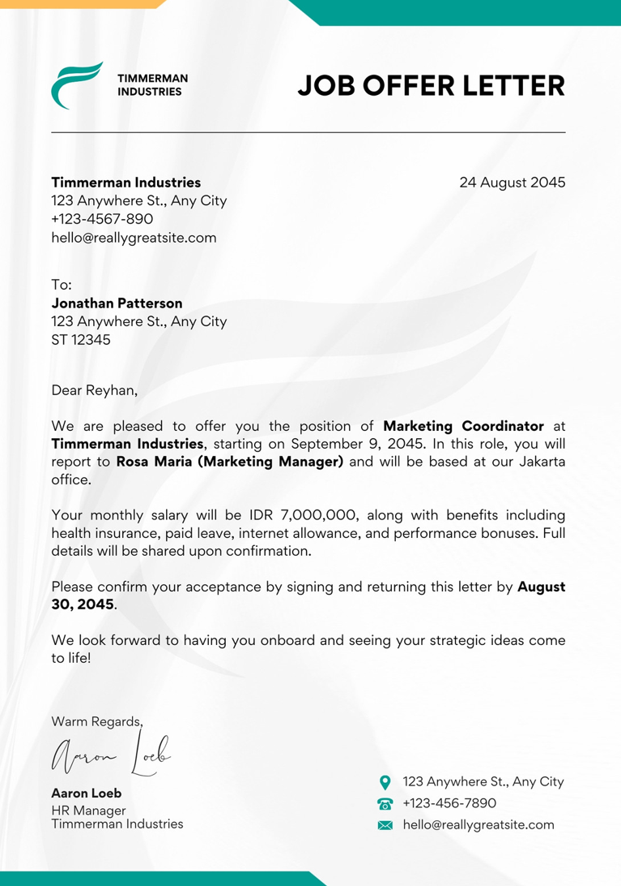
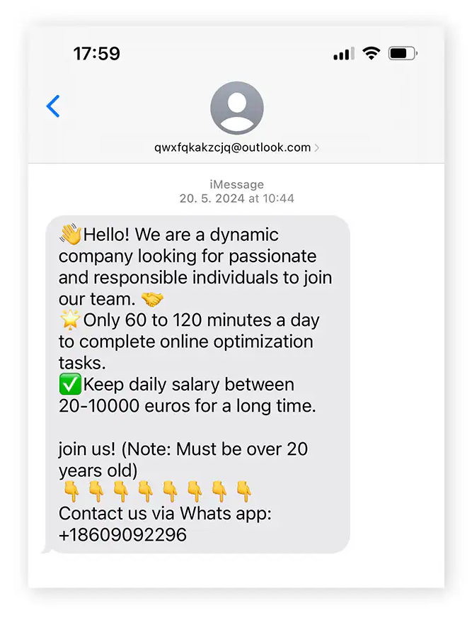

Legitimate Example

A real employer explains the job duties, pay, and hiring process clearly.
You can verify the company through its official website, and legit employers will typically reach out over email rather than messages.

Job and employment scams use fake job offers to steal your money or personal information.
Scammers may:
Knowing the warning signs can help you protect yourself.

A real employer explains the job duties, pay, and hiring process clearly.
You can verify the company through its official website, and legit employers will typically reach out over email rather than messages.

A scammer may offer unusually high pay, promise a job without an interview, or demand an upfront fee. Requests to deposit a check and return part of the money are major warning signs.
Remember: if it looks too good to be true, it most likely is a scam.
Scammers pretend to offer real work to gain your trust.. They then try to get your money, banking details, or personal information.
You see a job advertisement, receive an unexpected message, or get contacted by someone claiming to be a recruiter.
The scammer asks for an upfront fee, banking information, identity documents, or a payment through a fake check scheme.
After you pay or share your details, the scammer may disappear, steal your money, or misuse your identity.
Fake job offers can appear in many places, including:
Anyone looking for work can encounter a job scam. Scammers may target people who:
However, it's important to know that anyone can fall victim.
If a job offer seems suspicious, take these steps:
Being scammed can happen to anyone. Acting quickly may help limit the damage, and reporting the incident can help protect others.
Be very cautious if an employer demands payment to secure a position, receive a paycheck, or begin work. Requests for upfront fees are a common scam warning sign. Verify any required costs independently before paying.
Contact your bank immediately and explain that the check may be fraudulent. Do not spend the money or send any of it to the recruiter. Even if the funds appear in your account, the check may later be rejected, and you could be responsible for the loss.
Look up the company independently, confirm that the job appears on its official careers page, and contact its hiring team using verified contact details. Be suspicious of unrealistic pay, pressure to act quickly, requests for upfront payments, or demands for sensitive information before the employer is verified.